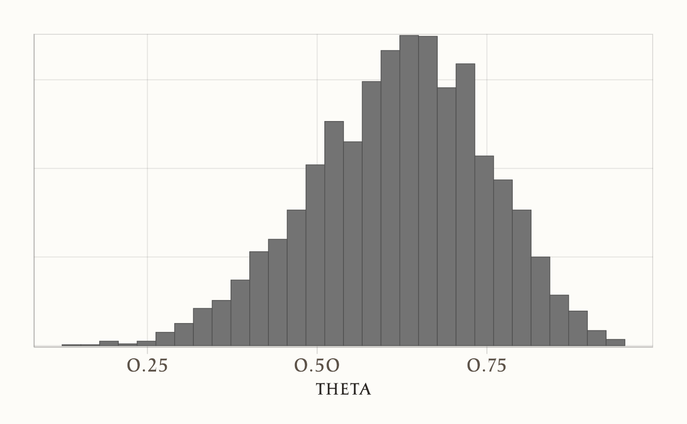

library(cmdstanr)
cmdstanr::cmdstan_version()[1] "2.37.0"cmdstanrIn questa sezione dell’appendice presentiamo una guida pratica all’implementazione di modelli Bayesiani utilizzando Stan attraverso l’interfaccia cmdstanr in R. Il framework cmdstanr rappresenta l’evoluzione moderna delle interfacce R per Stan, offrendo prestazioni ottimizzate e un workflow semplificato per l’inferenza Bayesiana.
Illustreremo il flusso di lavoro completo attraverso i seguenti passaggi:
CmdStanR è l’interfaccia R per CmdStan, la versione più leggera e flessibile di Stan. A differenza di rstan, che integra il compilatore C++ dentro R, CmdStanR utilizza direttamente gli eseguibili di CmdStan. Questo porta diversi vantaggi:
Inoltre, CmdStanR rappresenta oggi la soluzione consigliata dagli sviluppatori Stan, in quanto più manutenuta e allineata con le versioni più recenti del linguaggio.
Per prima cosa, installiamo il pacchetto cmdstanr da GitHub:
# install.packages("pak")
pak::pak("stan-dev/cmdstanr")Dopodiché, occorre installare CmdStan:
cmdstanr::install_cmdstan()Questo comando scarica e compila CmdStan localmente. La prima installazione può richiedere qualche minuto, ma successivamente sarà sufficiente aggiornare all’occorrenza con:
cmdstanr::install_cmdstan(update = TRUE)Per verificare la corretta installazione:
library(cmdstanr)
cmdstanr::cmdstan_version()[1] "2.37.0"Per lavorare ci servono alcuni pacchetti:
suppressPackageStartupMessages({
library(tidyverse) # per manipolare i dati
library(cmdstanr) # interfaccia R per Stan
library(posterior) # per lavorare con i campioni MCMC
library(bayesplot) # per visualizzare i risultati
library(here) # per gestire i percorsi ai file
})
set.seed(42) # per riproducibilitàConsideriamo il seguente scenario sperimentale: in un esperimento bernoulliano abbiamo osservato 6 successi su 9 prove. L’obiettivo dell’analisi è stimare la distribuzione a posteriori della probabilità di successo \(\theta\).
A questo scopo, adottiamo come distribuzione a priori una Beta(2, 2), scelta in quanto debolmente informativa e in grado di esprimere una moderata convinzione preliminare sulla simmetria della probabilità di successo, pur mantenendo una sufficiente flessibilità per permettere ai dati di guidare l’inferenza.
Il modello Stan è già stato scritto in un file beta_binomial_model.stan. Il codice Stan è identico indipendentemente dall’interfaccia (R, Python, Julia, …).
Stan richiede che i dati siano in una lista di R con i nomi esattamente uguali a quelli usati nel file .stan.
data_list <- list(
N = 9, # numero di prove
y = 6, # numero di successi
alpha_prior = 2, # parametri del prior
beta_prior = 2
)Diciamo a R dove si trova il file .stan e lo compiliamo:
file <- file.path(here::here("stan", "beta_binomial_model.stan"))
file
mod <- cmdstan_model(file) # compila il modelloL’oggetto mod rappresenta il modello Stan compilato. Possiamo visualizzarne le informazioni:
mod$print()
#> data {
#> int<lower=1> N; // numero di prove
#> int<lower=0, upper=N> y; // successi osservati
#> real<lower=0> alpha_prior; // Beta prior: alpha
#> real<lower=0> beta_prior; // Beta prior: beta
#> }
#> parameters {
#> real<lower=0, upper=1> theta; // probabilità di successo
#> }
#> model {
#> // Prior
#> theta ~ beta(alpha_prior, beta_prior);
#> // Likelihood
#> y ~ binomial(N, theta);
#> }
#> generated quantities {
#> // Replica del dato per pp_check
#> int y_rep = binomial_rng(N, theta);
#>
#> // Log-likelihood del dato osservato (per LOO/WAIC)
#> real log_lik = binomial_lpmf(y | N, theta);
#> }Per stimare i parametri usiamo il metodo $sample(). Questo esegue l’algoritmo MCMC di Stan:
fit <- mod$sample(
data = data_list,
seed = 123,
chains = 4, # numero di catene
parallel_chains = 4 # quante catene girano in parallelo
)Nota: per default ogni catena produce 1000 campioni dopo il warmup, quindi avremo 4000 campioni posteriori.
I campioni possono essere estratti in diversi formati. Per esempio, come array a 3 dimensioni (iterazioni × catene × variabili):
draws_arr <- fit$draws()
str(draws_arr)
#> 'draws_array' num [1:1000, 1:4, 1:4] -8.67 -8.76 -8.68 -11.81 -8.71 ...
#> - attr(*, "dimnames")=List of 3
#> ..$ iteration: chr [1:1000] "1" "2" "3" "4" ...
#> ..$ chain : chr [1:4] "1" "2" "3" "4"
#> ..$ variable : chr [1:4] "lp__" "theta" "y_rep" "log_lik"
dim(draws_arr)
#> [1] 1000 4 4Oppure come data frame lungo:
draws_df <- as_draws_df(fit)
head(draws_df)
#> # A draws_df: 6 iterations, 1 chains, and 4 variables
#> lp__ theta y_rep log_lik
#> 1 -8.7 0.60 8 -1.4
#> 2 -8.8 0.67 9 -1.3
#> 3 -8.7 0.59 6 -1.4
#> 4 -11.8 0.89 9 -2.8
#> 5 -8.7 0.57 7 -1.5
#> 6 -8.7 0.61 8 -1.4
#> # ... hidden reserved variables {'.chain', '.iteration', '.draw'}Il metodo $summary() calcola statistiche posteriori (medie, deviazioni standard, quantili, ecc.):
fit$summary(variables = "theta")
#> # A tibble: 1 × 10
#> variable mean median sd mad q5 q95 rhat ess_bulk ess_tail
#> <chr> <dbl> <dbl> <dbl> <dbl> <dbl> <dbl> <dbl> <dbl> <dbl>
#> 1 theta 0.620 0.628 0.129 0.132 0.394 0.820 1.005 1247.337 1842.290Possiamo specificare statistiche personalizzate, ad esempio:
Possiamo stimare la probabilità che \(\theta \leq 0.5\):
fit$summary("theta", pr_less_05 = ~ mean(. <= 0.5))
#> # A tibble: 1 × 2
#> variable pr_less_05
#> <chr> <dbl>
#> 1 theta 0.180Il pacchetto bayesplot semplifica la creazione di grafici. Ad esempio, un istogramma della distribuzione posteriore di \(\theta\):
mcmc_hist(fit$draws("theta"))
Per verificare che l’MCMC abbia funzionato correttamente:
fit$diagnostic_summary()
#> $num_divergent
#> [1] 0 0 0 0
#>
#> $num_max_treedepth
#> [1] 0 0 0 0
#>
#> $ebfmi
#> [1] 1.150 0.882 1.223 1.165È anche possibile accedere alle variabili interne del campionatore (es. profondità dell’albero, divergenze):
head(fit$sampler_diagnostics(format = "df"))
#> # A draws_df: 6 iterations, 1 chains, and 6 variables
#> treedepth__ divergent__ energy__ accept_stat__ stepsize__ n_leapfrog__
#> 1 2 0 11.9 1.00 0.93 3
#> 2 2 0 9.0 0.96 0.93 3
#> 3 2 0 8.7 1.00 0.93 7
#> 4 2 0 11.8 0.63 0.93 3
#> 5 2 0 11.2 1.00 0.93 7
#> 6 2 0 8.7 1.00 0.93 3
#> # ... hidden reserved variables {'.chain', '.iteration', '.draw'}Se ci sono problemi (molte divergenze, R-hat alto, ecc.), occorre rivedere il modello o i parametri di campionamento.
In conclusione, abbiamo visto i passaggi fondamentali per usare cmdstanr:
Questa procedura è la base di ogni analisi con Stan via R: indipendentemente dal modello, i passaggi saranno sempre questi.